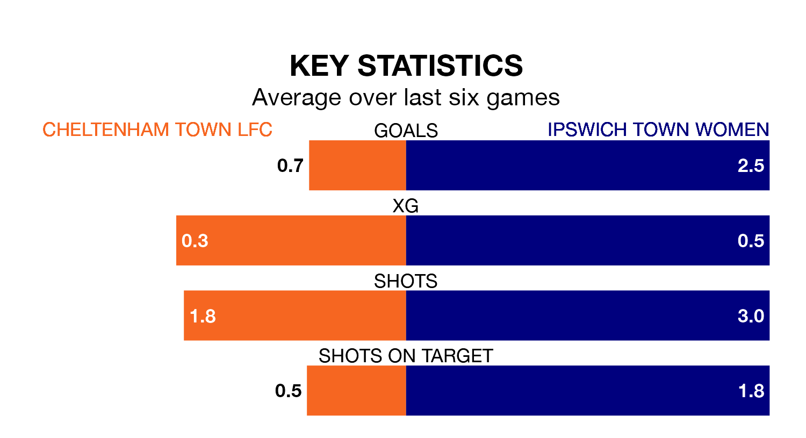

Cheltenham Town LFC welcome Ipswich Town Women on early Sunday looking to pick up points to end their three-game losing streak.
Cheltenham Town's struggles have left them with seven points from their last six Women's National League Premier Division – South matches, while their opponents have earned the same number from a possible 18.
With 40 goals in 12 games so far this season, Ipswich Town are the league's second-highest scorers with 3.3 goals per game. And they are conceding fewer than average, letting in 13 goals at a rate of 1.1 per game.
Cheltenham Town, meanwhile, are below average scorers, with 1.1 goals per game, compared to a league average of 1.9. They have conceded 2.5 goals per game.
The home side are eighth in the table after 14 games, of which they have won four and drawn two, earning 14 points.
The visitors are three places ahead of Cheltenham Town in fifth, with seven wins and one draw putting them on 22 points.
In the last three years, Cheltenham Town and Ipswich Town have played each other on three occasions. Ipswich Town won all of them.
Their last meeting was on September 24, when Ipswich Town won 8-0 at home.
Cheltenham Town's last match was on January 28, a 1-0 loss against Milton Keynes Dons Women.
Ipswich Town lost 1-0 against Portsmouth Women last time out, on February 4.
Updated: 10:28 (UTC), 06/02/24